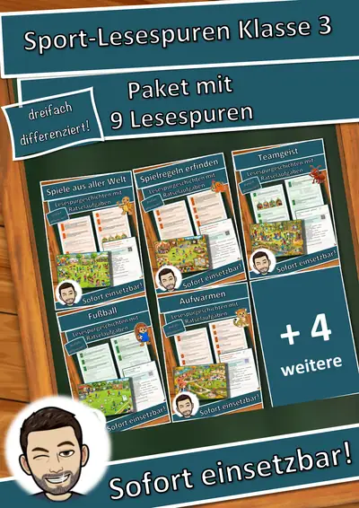
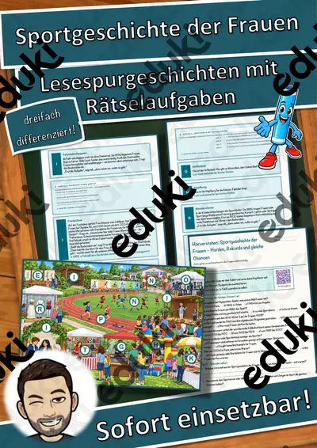
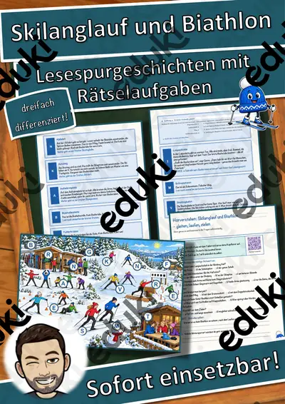

Materialpaket Lesespurgeschichten Sport Klasse 8: 5 Lesespuren mit Rätselaufgaben, dreifach differenziert

Materialpaket Lesespurgeschichten Sport Klasse 7: 7 Lesespuren mit Rätselaufgaben, dreifach differenziert

Materialpaket Lesespurgeschichten Sport Klasse 6: 5 Lesespuren mit Rätselaufgaben, dreifach differenziert

Materialpaket Lesespurgeschichten Sport Klasse 5: 4 Lesespuren mit Rätselaufgaben, dreifach differenziert

Materialpaket Lesespurgeschichten Sport Klasse 3: 9 Lesespuren mit Rätselaufgaben, dreifach differenziert

Materialpaket Lesespurgeschichten Sport Klasse 1: 9 Lesespuren mit Rätselaufgaben, dreifach differenziert

Lesespur: Eishockey: schnell, hart und fair – Lesespurgeschichte mit Rätseln (Klasse 7)

Lesespur: Jonglieren: mit Tüchern, Bällen und Ringen – Lesespurgeschichte mit Rätseln (Klasse 3)

Lesespur: Mein Sporttag: Abschluss-Sportfest mit Spielstationen – Lesespurgeschichte mit Rätseln (Klasse 1)

Lesespur: E-Sport: ist das Sport? – Lesespurgeschichte mit Rätseln (Klasse 10)

Lesespur: Bewegungslandschaft: ein Hindernisparcours aus Alltagsdingen – Lesespurgeschichte mit Rätseln (Klasse 1)

Lesespur: Rettungsschwimmen: sicher im Wasser helfen – Lesespurgeschichte mit Rätseln (Klasse 9)

Lesespur: Der Sportverein: mitmachen, mithelfen, mitbestimmen – Lesespurgeschichte mit Rätseln (Klasse 8)

Lesespur: Sport und Medien: Werbung, Stars und Vorbilder – Lesespurgeschichte mit Rätseln (Klasse 10)

Lesespur: Sportgeschichte der Frauen: Hürden, Rekorde und gleiche Chancen – Lesespurgeschichte mit Rätseln (Klasse 10)

Lesespur: Wassersport: Rudern, Kanu und Segeln – Lesespurgeschichte mit Rätseln (Klasse 7)

Lesespur: Sport und Umwelt: Natursport ohne Spuren – Lesespurgeschichte mit Rätseln (Klasse 9)

Lesespur: Tanzen in der Schule: Rhythmus und Bewegung – Lesespurgeschichte mit Rätseln (Klasse 5)

Lesespur: Mannschaftssportarten im Vergleich: Regeln, Felder, Spielerzahl – Lesespurgeschichte mit Rätseln (Klasse 7)

Lesespur: Sport früher: Turnvater Jahn und die Spiele der Großeltern – Lesespurgeschichte mit Rätseln (Klasse 6)

Lesespur: Die Bundesjugendspiele: laufen, springen, werfen – Lesespurgeschichte mit Rätseln (Klasse 3)

Lesespur: Skilanglauf und Biathlon: gleiten, laufen, zielen – Lesespurgeschichte mit Rätseln (Klasse 8)

Lesespur: Werfen: Schlagball, Weitwurf und Zielwurf – Lesespurgeschichte mit Rätseln (Klasse 3)

Lesespur: Klettern sichern: Knoten, Seil und Partnercheck – Lesespurgeschichte mit Rätseln (Klasse 7)

Lesespur: Sport und Ernährung: Energie fürs Training – Lesespurgeschichte mit Rätseln (Klasse 9)

Lesespur: Spielregeln erfinden: eigene Spiele ausdenken, testen, verbessern – Lesespurgeschichte mit Rätseln (Klasse 3)

Lesespur: Ausdauer: der lange Atem – Lesespurgeschichte mit Rätseln (Klasse 8)

Lesespur: Fang- und Laufspiele: flitzen, ausweichen, abklatschen – Lesespurgeschichte mit Rätseln (Klasse 1)

Lesespur: Inklusion im Sport: Para-Sport ausprobieren – Lesespurgeschichte mit Rätseln (Klasse 8)

Lesespur: Bewegungsbaustelle: bauen, klettern, rutschen, springen – Lesespurgeschichte mit Rätseln (Klasse 1)
Keine Materialien gefunden – versuch einen anderen Suchbegriff oder Filter.
Sport mit Theorie und Praxis
Sportunterricht besteht nicht nur aus Bewegung. Regeln müssen verstanden, Belastungen eingeschätzt und Fachbegriffe verwendet werden. Die Materialien dieser Seite decken beides ab: Karten und Stationen für die Halle und Lesespuren, mit denen Theoriestunden oder Regenstunden sinnvoll gefüllt werden.
Alle Materialien sind kopierfertig und brauchen keine lange Vorbereitung. Gerade bei wechselnder Witterung oder fehlender Halle lassen sich die Lesespuren als vollwertiger Ersatz einsetzen, ohne dass die Sportstunde zur Leerstelle wird.
Für die Planung hilft die Einteilung nach Klassen: Wer eine Einheit zu Regeln und Fairness plant, findet Material für Klasse 3 bis 8, wer eine Gesundheitsreihe aufbaut, wählt aus den Lesespuren zu Puls, Ausdauer und Ernährung.
Klasse 1 und 2: Spielen und Bewegen
Für die ersten Schuljahre gibt es „Mein Sporttag“, „Bewegungslandschaft“, „Fang- und Laufspiele“ und „Kleine Spiele auf dem Pausenhof“. Mit „Kinderyoga: Stationenlernen mit 12 Stationen“ und „Koordination und Reaktion: 48 Aufgabenkarten Turnhalle“ lässt sich ruhige und lebhafte Bewegung abwechseln.
Klasse 3 und 4: Sportarten kennenlernen
Mit „Jonglieren“, „Werfen“, „Die Bundesjugendspiele“ und „Spiele aus aller Welt“ stehen Einzelthemen bereit, mit der Sport-Werkstatt ein ganzes System: das „Sport-Werkstatt Gesamtpaket: 13 Sportarten, Aufgabenkarten in 3 Stufen“ und Teilpakete wie „Laufen & Spiele“ oder „Schläger & Stock“. Für Klasse 4 gibt es außerdem „Fair Play und Spielregeln: Stationenlernen Sport“.
Klasse 5 bis 10: Wissen rund um den Sport
Die Lesespuren der Sekundarstufe beginnen mit „Tanzen in der Schule“, „Inline-Skaten“, „Rückschlagspiele“ und „Puls und Atmung beim Sport“, später folgen „Eishockey“, „Klettern sichern“, „Erste Hilfe beim Sport“, „Der Sportverein“ und „Inklusion im Sport“. In den Abschlussklassen stehen „Rettungsschwimmen“, „Sport und Ernährung“, „Doping“ und „E-Sport“ zur Auswahl.
Häufige Fragen
Für welche Schulstufen eignet sich die Sport-Werkstatt?
Für Klasse 4, mit Aufgabenkarten in drei Stufen. Auch in Klasse 3 oder 5 lässt sie sich einsetzen.
Brauche ich viel Geräte?
Das hängt vom Material ab. Viele Spiele und Karten kommen mit Standardgeräten aus, einzelne Stationen brauchen zusätzliche Hilfsmittel. Das steht in der Beschreibung.
Gibt es Material für den Theorieunterricht?
Ja, vor allem die Lesespuren zu Regeln, Gesundheit, Training und Medien in den Klassen 5 bis 10.
Passt es für Inklusion?
Es gibt eine eigene Lesespur zu Inklusion im Sport. Die Stationenkarten lassen sich nach Stufen anpassen.